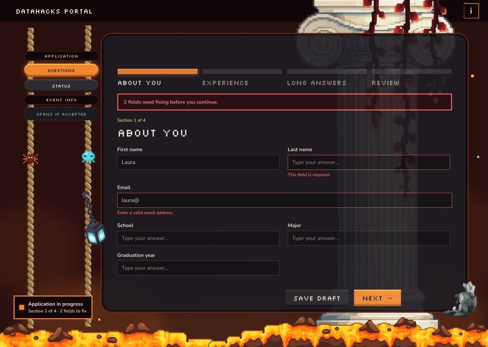
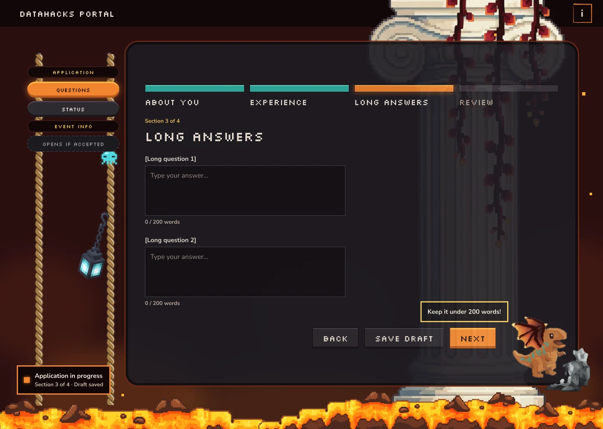
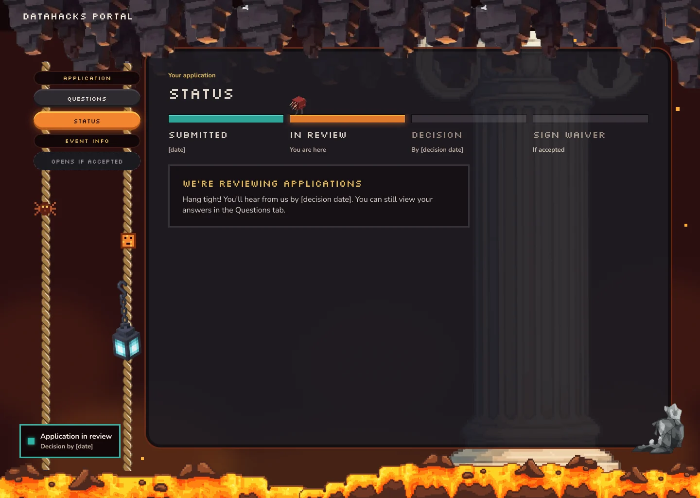
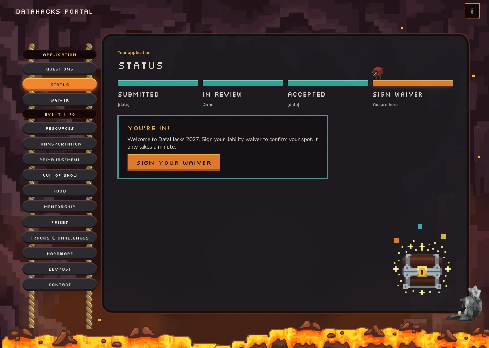
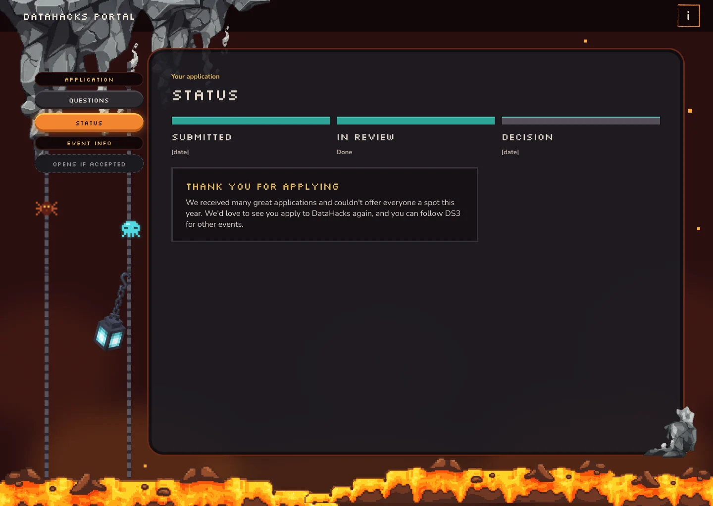
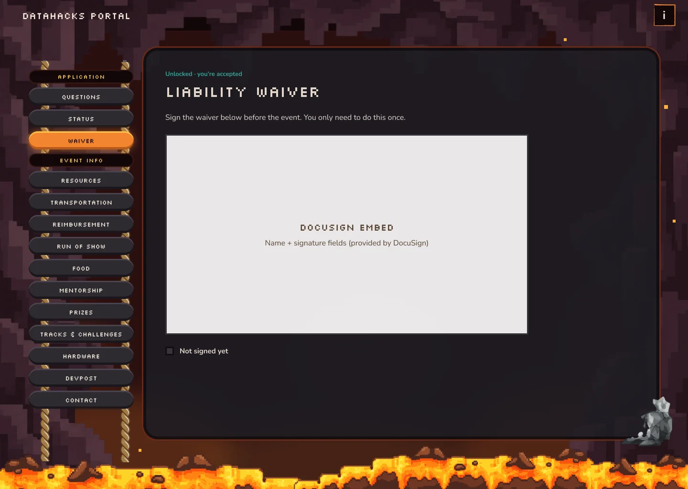
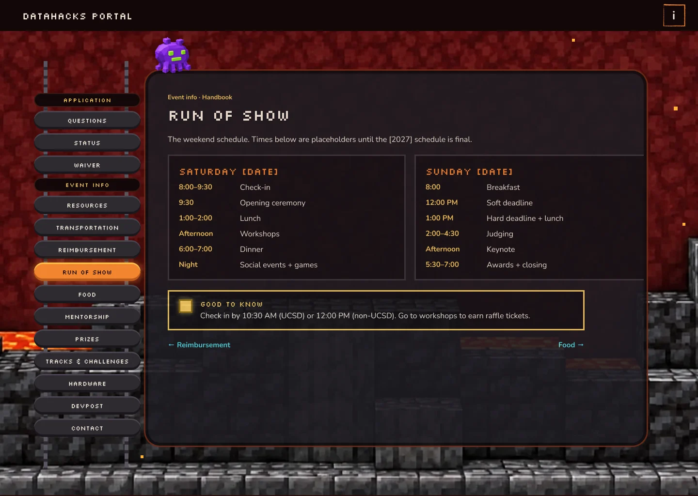
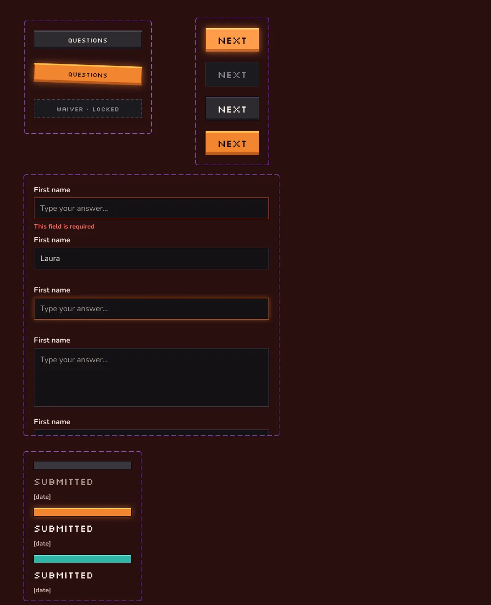
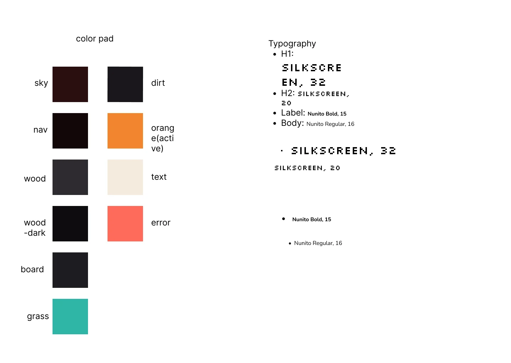

- Role
- Co-designer (with one other designer). I owned the application, status and waiver flows
- Team
- 4 designers + the dev team
- Tools
- Figma, Procreate
- Timeline
- Oct 2026 – present
- Outcome
- The portal is live and uses my visual system: the Nether theme, board-and-sidebar layout, tab signs, inputs and pixel/sans type pairing. See the live portal ↗ · Click through the Figma prototype ↗
01 · The problem
Applications make people anxious
DataHacks is the yearly hackathon run by UCSD's Data Science Student Society. Our design team worked in a hand-painted, blocky style inspired by Minecraft and TreeHacks, with no official game assets. The main event website was designed by our design lead. My piece is the applicant portal and the mascot.
Applicants often don't know how much of the form is left, whether their work saved, what went wrong, or when they'll hear back. So the goal was one sentence:
Applicants should never wonder where they stand.
Every screen below answers one of four questions: How much is left? Did it save? What went wrong? When will I hear back?
02 · Key screens
Click the numbers on the screens
Each numbered dot is a design decision. The same notes are listed next to the screen, so nothing is hidden behind a click.

- How much is left?A four-part progress bar with each section named, plus "Section 1 of 4" in words.
- Nothing hiddenThe sidebar tabs are hanging signs. Locked ones say "Opens if accepted" instead of disappearing.
- Did it save?Save Draft sits right next to Next, so saving isn't a separate errand.
- Answered without askingThe corner chip says "Section 1 of 4 · Draft saved," so you can close the tab without worrying.

- What went wrong?A banner counts the problems up top: "2 fields need fixing before you continue."
- Where?Each field shows its own message right under it, so you don't have to reread the whole page.
- How to fix itSpecific wording, "Enter a valid email address," instead of a generic "invalid input."
- Same story everywhereThe corner chip updates too: "2 fields to fix."

- Progress at a glanceFinished sections turn grass-green, so you can see progress before reading anything.
- Limits up front"0 / 200 words" sits under each box, so you see the limit before you hit it.
- Dyno, exactly onceMy first version had Dyno all over the application. After feedback, he appears only here, on the hardest step, where a friendly nudge actually helps.

- When will I hear back?A step tracker with "You are here" under the current step, and the decision date under the next one.
- Plain language"Hang tight! You'll hear from us by [decision date]," plus a reminder that your answers are still viewable.
- The chip follows you"Application in review · Decision by [date]," on every page.
03 · Every outcome
Designing the answers, not just the question
Each decision got its own screen, with its own next step. Switch between them:


After acceptance, the waiver and a 10-page handbook unlock. I first pictured the handbook as a book you flip through, then switched to sidebar pages, because flipping adds friction when someone just needs the schedule.


04 · How it changed
Three turns I took
Three template directions, then a wooden signpost look.
After a team meeting, a Minecraft Nether theme that the whole portal now uses.
The event handbook as a book you flip through.
Sidebar pages. Flipping is charming once, and friction every time after.
Dyno on every step, and lava along both sides of the form.
Dyno once, on the long-answer step. The lava came out so the form could breathe.
05 · Design system
Keeping four designers consistent
I built the style guide and component sheet. Tabs (default, active, locked), buttons, inputs (empty, filled, focused, error) and status steps all have every state drawn out. Headings use a pixel font and body text a clean sans-serif.


06 · What shipped
Designed vs. launched
For launch, engineering simplified things to keep the build lean. Here's the honest comparison:
| What I designed | At launch | Status |
|---|---|---|
| Nether theme, board-and-sidebar layout, tab signs, inputs, type pairing | Shipped as designed | Shipped |
| 4-step form with a progress bar | One scrolling form with automatic saving | Changed |
| Animated Dyno (blink, wave, talk), mini Dyno riding the progress bar, flowing lava | Cut for build time | Cut · alive on this page |
| Status, waiver and handbook pages | Planned for after admissions decisions | Later |
Notice the little Dyno riding the progress rail on the side of this page? That was my progress-bar idea from the prototype.
07 · Dyno, mascot and stickers
Every pixel of him is hand-painted
I painted Dyno in four poses and four wing colors. My process: AI references for composition, then traced and hand-painted in my own style in Procreate. The design lead approved this for mockup references, and every final asset is drawn by hand. These four frames are what the animation at the top is built from:

Peel a sticker
I turned Dyno into a die-cut sticker series. Drag one anywhere on this page. It stays put if you come back later. (Keyboard: focus a sticker and press Enter.)
DataHacks 2027 · die-cut sticker sheet
Objects with states
I painted props the way I'd spec components: every object has its states drawn out. Click to switch.
Next up is the 2027 event logo (it's on the sticker sheet above), small enough for a T-shirt corner, for merch like banners and lanyard cards.
08 · Reflection
If I had another round
I'd push to bring back a lightweight progress indicator first, because it's the cheapest change with the biggest effect on applicants finishing the form. Next, I'd run a quick usability test with five students to measure completion time and errors.